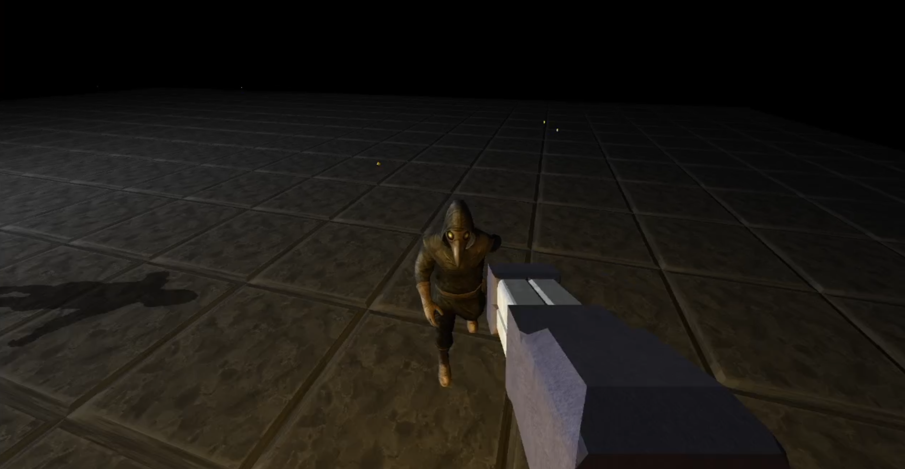
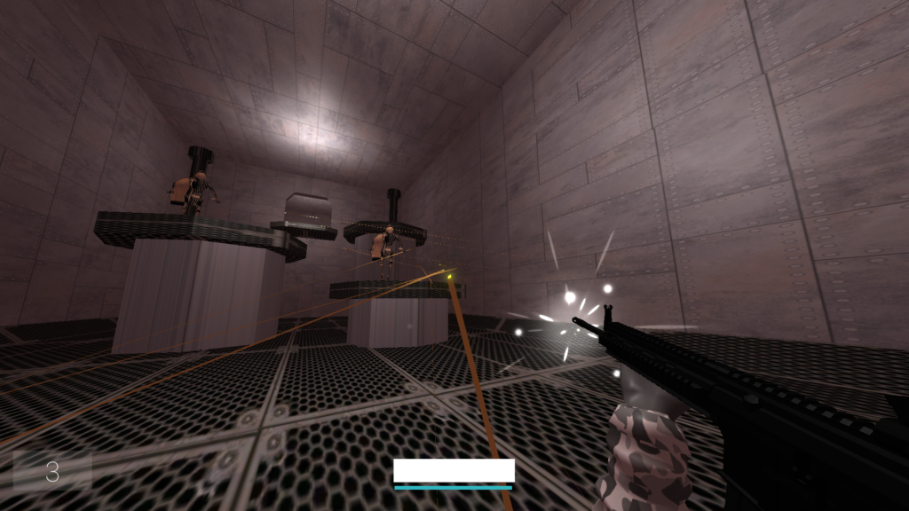
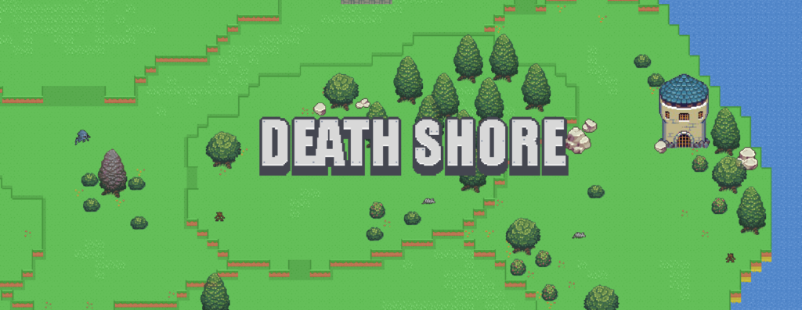

# Projects
Here are some of the projects I've made.
## Salmon Engine

Salmon Engine is a game engine made in C++ that can be used to make both 3d and 2d games.
It uses the entity component system paradigm (ECS)
to maximize performance and cache-locality. It uses OpenGL for rendering, OpenAL for audio and ImGui for the editor GUI.
It also has an editor where you can add entities and components. It saves the scene with JSON.
I integrated Jolt for the 3d physics engine, but for the 2d physics engine, I built my own. It's pretty good and stable and is quite performant. It functions quite similarly to Box2D by using AABB trees for broad phase collision testing and SAT for polygon collisions.
The main features it has are: 3d rendering, 2d rendering, lighting and shadow mapping, inverse kinematics, model importing, 3d physics, 2d physics, particle effects, skeletal animations, sprite animations and more.You can find it here: https://github.com/TheSlugInTub/Salmon-Engine
## Devil's Descent

Devil's Descent is a game I worked on in the Unity game engine. It's an FPS shooter mainly inspired by ULTRAKILL, where you gun down bad guys and escape the facility.
There are three weapons, a pistol, a rifle which can shoot grenades, and a shotgun which can shoot energy orbs. Energy orbs are shot by other enemies and you can
parry them to fling the energy orb back at them.
You can find it here: https://slug-in-tub.itch.io/devils-descent-demo
## Death Shore

Death Shore is a top-down exploring/adventure game, where you traverse the isle of Death Shore and progress in the story by killing enemies, exploring dungeons,
and slaying bosses.
You can find it here: https://slug-in-tub.itch.io/death-shore